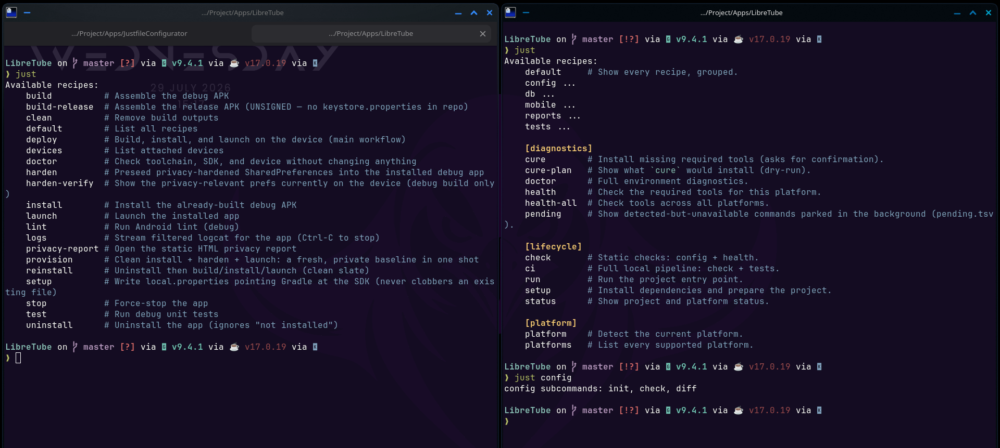

⚙
JustfileConfigurator
Cross-platform Justfile template & dashboard
◐
Overview
Commands
Tree
Platform matrix
Packages
Rules
Add an OS
Before / After

A flat recipe dump (left) becomes a grouped, self-documenting
just
menu (right).
Commands
Template tree
Platform matrix
Packages per platform
Architectural rules
Add a new OS
Required environment variables